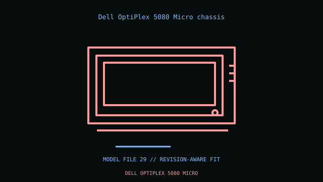

[ IDENTIFIED ENCLOSURE // OFFICE AND MINI-PC ENCLOSURES ]
Dell OptiPlex 5080 Micro chassis
182 × 36 × 178 mm H×W×D; 1.18 L proprietary business system. Proprietary 5080 Micro board, external 4.5 mm barrel adapter, SO-DIMMs and Dell thermal assembly; no ATX board/PSU fit.

VARIANT / ARCHIVAL CAVEAT: Distinct from 5080 SFF/Tower. SATA bracket/cable, WLAN antenna and USB-C module are SKU-specific; match service tag and adapter wattage.
Mechanical specifications and fit
| Catalog identity / revision | Dell OptiPlex 5080 Micro chassis |
|---|---|
| Dimensions / construction | 182 × 36 × 178 mm H×W×D; 1.18 L proprietary business system. |
| Drive bays / storage | M.2 SSD and one optional 2.5-inch SATA drive/bracket; no external bay. |
| Board, system and compatibility | Proprietary 5080 Micro board, external 4.5 mm barrel adapter, SO-DIMMs and Dell thermal assembly; no ATX board/PSU fit. |
| Revision / service note | Distinct from 5080 SFF/Tower. SATA bracket/cable, WLAN antenna and USB-C module are SKU-specific; match service tag and adapter wattage. |
Preservation and installation notes
Identify the exact service tag or machine-type/model and preserve its board, thermal module, adapter, antenna and mounting hardware as a matched system.
- Photograph the complete model label, assembly revision and option identifiers before opening; keep matching covers, brackets, shields, trays and fasteners together.
- An office mini-PC enclosure is not a generic motherboard case; use only the documented model/revision parts and specified power adapter.
Manufacturer manuals and model-specific sources
- Dell OptiPlex 5080 Micro chassis manufacturer specifications / product referenceModel-specific manufacturer specification, owner/service manual or technical reference; verify exact model and revision.
- Dell OptiPlex 5080 Micro chassis manual and service documentationModel-specific manufacturer specification, owner/service manual or technical reference; verify exact model and revision.
Where normalized dimensions or option-specific limits are not published, the record states that limitation rather than asserting a generic fit. Verify the cited manual revision against the specimen.